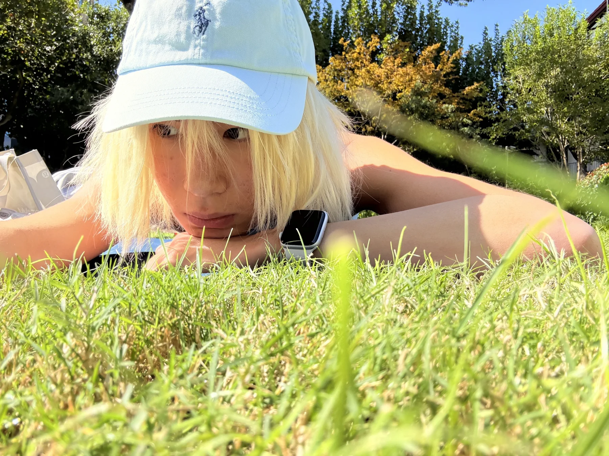

Zhixing Ken Zhang
Zhixing
Zhang张知行
Zhixing Ken Zhang（张知行）is an interdisciplinary artist whose practice spans interactive installation, moving image, photography, and visual design. The artist's work centers on language, translation, and cultural transmission — examining how meaning mutates across systems.
The artist's practice has been formed through movement across the United States, China, and Australia, and is shaped by perpetual translation. The artist approaches art as a social experiment, with growing interest in artificial intelligence and large language models as artistic material.
Education
Solo Projects
Selected Solo & Group Exhibition
“My practice begins with a fundamental observation: no signal passes through a medium unchanged. Language, when translated, does not merely shift between systems — it mutates, accumulates, and reveals the gaps between cultures. I am interested in those gaps as material. The untranslatable is not a failure of communication; it is the site where cultural specificity becomes visible.”